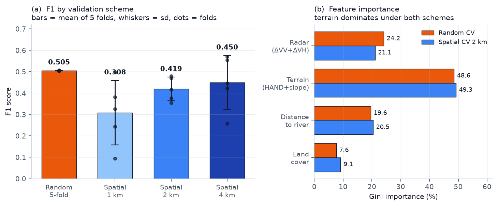
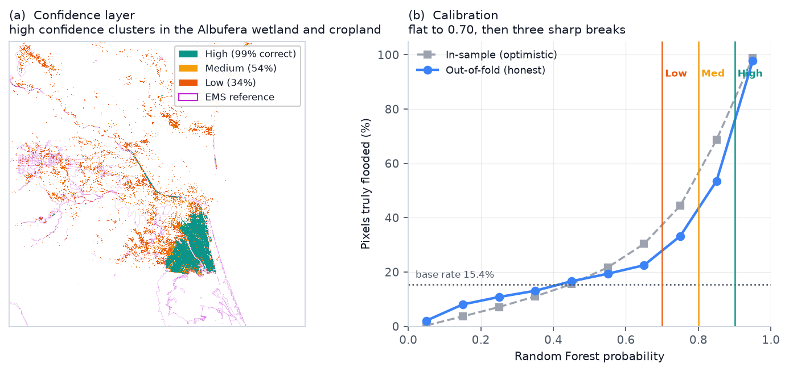
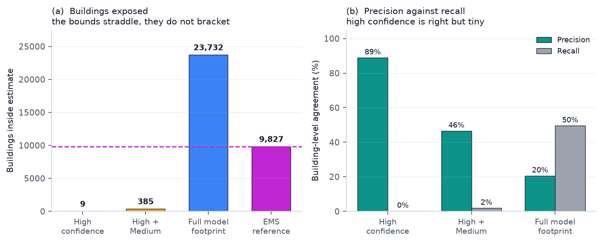

2026
A Sentinel-1 radar flood map of the 29 October 2024 Valencia flash flood was produced from a pre-event and post-event radiometrically terrain-corrected image pair, classified with a Random Forest over backscatter change, terrain and hydrological features. Validated against the Copernicus EMS EMSR773 delineation, the classifier reached F1 = 0.505 ± 0.001 under random five-fold cross-validation but only 0.419 ± 0.056 under spatially blocked cross-validation — a 17% loss of apparent skill and a 62-fold increase in variance between folds. Feature importance shows the model leaning on terrain rather than radar, indicating it learns a topographic flood-susceptibility proxy more than a radar flood signal. A confidence layer calibrated on out-of-fold predictions separates a small, highly reliable core (99% correct, 9.5% of the footprint) from a large band carrying no skill above the base rate. Exposure estimates built on these tiers fail to bracket the official reference, and the reasons are diagnosable. An interactive web map accompanies the study.
On 29 October 2024 a cut-off low (DANA) released over 400 mm of rain in hours across the Valencia region of eastern Spain. Flash flooding through the Poyo and Turia catchments and the towns south of the city killed more than 220 people, making it Spain's deadliest flood in decades. Rapid, wide-area mapping of the inundated extent matters for both emergency response and post-event analysis.
Synthetic aperture radar is the usual instrument for this. It penetrates cloud and works at night, so unlike optical sensors it is not defeated by the weather system that caused the flood. Open water is normally easy to detect: a smooth surface reflects the radar pulse away from the sensor, producing a sharp drop in backscatter.
The harder problem is knowing whether a flood map is any good. Flood extent is strongly spatially autocorrelated, so a randomly held-out test pixel usually sits metres from a training pixel of the same class. Random cross-validation therefore measures interpolation between neighbours rather than prediction, and reports a score the model will not reproduce on unseen ground. This study quantifies that gap for a real event, uses it to calibrate a confidence layer that states where the map can be trusted, and propagates the result into exposure estimates.
Two Sentinel-1A IW scenes were obtained as radiometrically terrain-corrected (RTC) gamma-nought products from the ASF HyP3 service: a pre-event pass on 20 October 2024 06:02 UTC and a post-event pass on 1 November 2024 06:02 UTC, both dual-polarisation (VV+VH), processed at 10 m. The study area is a 0.4° × 0.3° box over the Valencia metropolitan area and the Albufera wetland, reprojected to UTM 30N on a 3345 × 3230 grid (1,080 km²).
The validation reference is the Copernicus Emergency Management Service rapid mapping activation EMSR773 observed-flood delineation. Its provenance matters for the credibility of the whole exercise: of the 141.8 km² delineated across the activation, 99.44% was derived from optical imagery (Landsat-8 69.7 km², Sentinel-2 47.2 km², GeoEye-1 17.9 km², WorldView-2 6.2 km²) and only 0.56% (0.79 km²) from Sentinel-1. Validating a radar model against it is therefore not circular.
Six predictors were assembled on the common 10 m grid: change in VV and VH backscatter (post minus pre, in dB); slope and Height Above Nearest Drainage (HAND) derived from the Copernicus GLO-30 DEM by D8 flow routing; Euclidean distance to the nearest OpenStreetMap waterway; and ESA WorldCover 10 m land cover, one-hot encoded. Permanent water bodies (WorldCover class 80) were excluded throughout — they are standing water, not flood. The labelled domain, where valid radar and reference coverage overlap, contains 6,101,579 pixels of which 17.36% are flooded.
A Random Forest (200 trees, maximum depth 15,
class_weight='balanced') was trained on a stratified sample of 300,000
pixels. No hyperparameter tuning was performed — the question here is how skill is
measured, not how high it can be pushed. A global Otsu threshold on ΔVV,
screened for slope > 15° and HAND > 50 m, provides a
conventional baseline.
Two cross-validation schemes were compared. Both use five folds, the same 300,000-pixel training budget, the same model settings and evaluation on the full test fold; the only difference is how pixels are assigned to folds, so any score gap is attributable to spatial leakage alone. The random scheme assigns pixels independently and stratified by class. The spatial scheme tiles the grid into square blocks, shuffles the blocks, and assigns whole blocks to folds; every pixel within 500 m of a differently-assigned block is excluded from both training and testing. Block sizes of 1, 2 and 4 km were tested.
Finally, confidence thresholds were calibrated on out-of-fold predictions from the 2 km spatial scheme, where every pixel is scored by the fold model that never saw its block. Calibrating on in-sample probabilities would have baked in exactly the optimism the validation set out to measure.
The Otsu baseline reaches F1 = 0.303 (IoU 0.179, precision 0.242, recall 0.407). Notably it selects a threshold of −0.44 dB, far from the −3 dB commonly used in the flood-mapping literature and close to zero change — a direct sign that the ΔVV distribution is barely bimodal in this scene.
The Random Forest reaches F1 = 0.505 ± 0.001 under random five-fold cross-validation. Under 2 km spatial blocking it falls to 0.419 ± 0.056: an absolute loss of 0.086, 17.0% of the apparent skill, and a 62-fold increase in between-fold standard deviation. The 1 km blocks score lower still (0.308 ± 0.151) and 4 km blocks recover somewhat (0.450 ± 0.126); the non-monotonic pattern reflects how much flooded area each fold happens to contain once blocks are large.

Feature importance is the diagnostic that explains the gap. HAND alone carries 39.6% of importance, distance-to-river 19.6%, and the two radar change bands together only 24.2%. Under spatial cross-validation the radar contribution falls further to 21.1% while terrain and distance rise to 69.7%.
Binned by predicted probability, the out-of-fold flood rate is almost flat from 0.1 to 0.7 — every bin within a few points of the 15.4% base rate — and then breaks three times: +10.8 points at 0.7, +20.3 at 0.8, and +44.4 at 0.9. Those breakpoints were adopted as the class boundaries, replacing fixed thresholds.
| Class | Probability | Area (km²) | % of footprint | Correct |
|---|---|---|---|---|
| High | ≥ 0.90 | 22.21 | 9.5% | 99.0% |
| Medium | 0.80 – 0.90 | 7.11 | 3.0% | 53.8% |
| Low | 0.70 – 0.80 | 32.93 | 14.1% | 33.5% |
| Unclassed | 0.50 – 0.70 | 171.96 | 73.4% | ≈ base rate |
The high-confidence class is genuinely reliable — its error rate barely moves
between in-sample (0.008) and out-of-fold (0.010) — but it is small, and it captures
only 20.8% of the reference flood. Nearly three-quarters of the footprint by area
falls in the unclassed 0.50–0.70 band, which the default p > 0.5
rule would call flooded despite carrying no measurable skill.

Within the study area OpenStreetMap records 126,337 buildings and 9,067 km of drivable road. Four nested estimates were computed and compared with the same quantities inside the official reference.
| Estimate | Area (km²) | Buildings | Road (km) | Bldg prec. | Bldg recall |
|---|---|---|---|---|---|
| High confidence | 22.2 | 9 | 95.8 | 88.9% | 0.1% |
| High + Medium | 29.3 | 385 | 192.9 | 46.5% | 1.8% |
| Full model footprint | 234.2 | 23,732 | 3,057.0 | 20.5% | 49.5% |
| EMS reference | 127.0 | 9,827 | 1,429.2 | — | — |
The tiers do not bracket the reference: they jump from 385 buildings to 23,732, stepping straight over the true 9,827 without ever approaching it. The reason is structural. High confidence is effectively unreachable on built-up land — just 4 of 63,353 high-confidence pixels fall on WorldCover class 50 — because urban double-bounce cancels the backscatter drop that flooding produces. Roads behave far better than buildings at every tier (99.3% precision in the high-confidence class, and F1 0.457 against 0.290 for the full footprint), because roads follow the low-lying cropland corridors where the radar signal is real.

Three physical factors suppress it. First, timing: the post-event pass is 19.7 hours after the flood crest recorded in the reference imagery and roughly three days after the peak. Flash floods in steep Mediterranean catchments drain quickly, so much of the water the reference captured had already gone when the satellite passed. Second, urban scattering: in built-up areas the dominant return is double-bounce between ground and wall, which increases with standing water and cancels the specular drop that flood detection relies on. Third, the single co-polarised change band carries limited information in vegetated and agricultural terrain, where surface roughness and crop state also shift backscatter between passes.
The 17% gap is not merely a lower number; it changes the interpretation of the model. Terrain features — HAND, slope and distance-to-river — are smooth and spatially continuous, so a model leaning on them can interpolate a randomly held-out pixel almost perfectly from its neighbours. That the radar bands contribute only a quarter of importance, and less under spatial blocking, indicates the classifier is largely reproducing a static topographic flood-susceptibility surface rather than detecting this particular flood. Such a model generalises poorly to a different event on the same terrain, and to the same event on different terrain — precisely what blocked validation exposes and random validation conceals. The 62× variance increase is arguably the more important result: it says a single accuracy figure for this map is not meaningful, because performance depends heavily on which part of the landscape is being asked about.
Rather than publish one footprint with one accuracy figure, the confidence layer states per-pixel where the map earns trust. The outcome is uncomfortable but usable: a 22 km² core that is right 99% of the time, and a much larger area where the model is doing little better than guessing the base rate. A responder can act on the first and treat the second as a search hint. This framing also makes the exposure bounds interpretable — their failure to bracket the reference is legible as a property of radar flood mapping in cities, not as an unexplained error.
The analysis uses a single post-event pass, so no temporal evolution is captured and the result is hostage to acquisition timing. InSAR coherence, which often separates flooded from dry urban areas where intensity cannot, was not used. 24% of the study area lies outside the Sentinel-1 swath and is unmapped, containing 3.0% of reference buildings and 7.5% of reference road length. The reference is itself a satellite-derived product with its own error, not ground truth, and no field validation was available. Finally, the reference's own timing differs from the radar pass, so some disagreement is real hydrological change rather than model error.
A Random Forest over Sentinel-1 backscatter change, terrain and hydrological features maps the October 2024 Valencia flood at F1 = 0.505 by conventional random cross-validation, but at 0.419 when validated on spatially disjoint blocks, with 62 times more variance between folds. Feature importance shows why: the model relies mainly on terrain, which random splitting lets it interpolate. Because flood extent is spatially autocorrelated, random cross-validation should not be treated as a default for this class of problem; blocked validation ought to be reported as standard, and the gap between the two is itself an informative diagnostic. Calibrating confidence on out-of-fold predictions turns the finding into something usable — a small core worth acting on, and an honest statement about the rest. The layers, metrics and exposure tables described here are available in an interactive map.
provenance.csv.